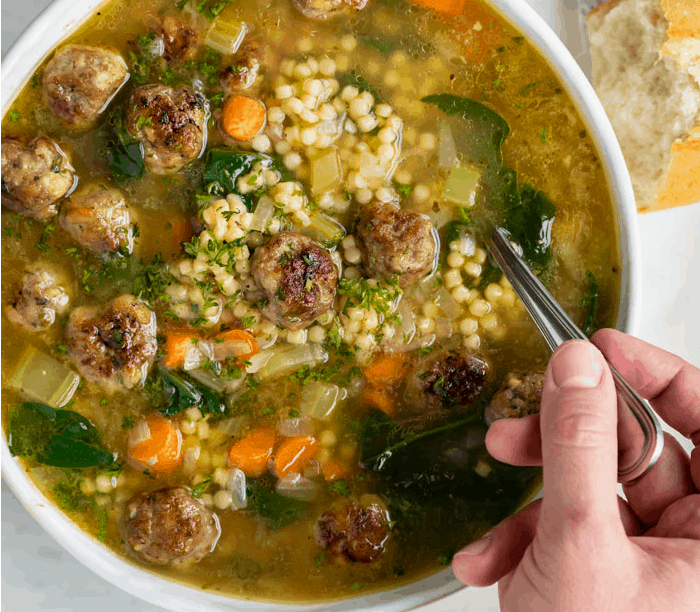

Italian Wedding Soup

Description
Tender meatballs, veggies, and pasta in a rich
and flavorful broth, Italian wedding soup
is a meal unto itself.
Ingredients
- Meatballs
- Olive Oil
- Yellow Onion
- Carrots
- Celery
- Chicken Broth
- Dry White Wine
- Bay Leaf
- Orzo Pasta
- Spinach
- Parmigiano Reggiano
Preparation
- start the soup. In a large soup pot or Dutch oven
over medium heat, heat the olive oil. Add the onions,
carrots, and celery and cook, stirring frequently,
until the vegetables are softened, about 8 minutes.
- Add the chicken broth, beef broth, water, wine, bay leaf,
salt and pepper and bring to a boil. Add the pasta and
cook, uncovered, at a gentle boil until the pasta is
al dente, 8 to 10 minutes
- Taste the soup and adjust the seasoning, if necessary.
Reduce the heat to low and add the spinach and meatballs.
Simmer for a few minutes, until the spinach is wilted
and the meatballs are warmed through. Ladle into bowls
and serve with grated Parmigiano Reggiano.